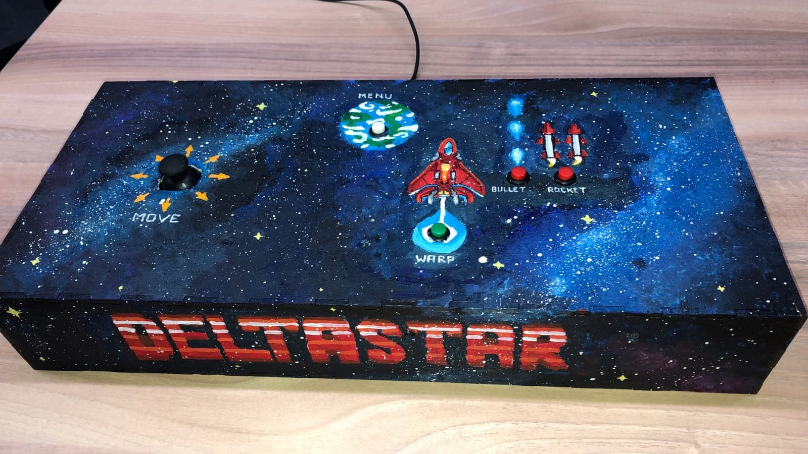

Delta Star is an Arcade Game that I worked on for two weeks in collaboration with two Artists and two Designers in early 2020. I programmed everything by myself. It was coded with C# inside an engine one of our teachers had developed. Inside the team dynamic, I gave my best to motivate my team to go for more and better things, while keeping expectations realistic. I had a great time and ended up painting the self-made controller box as well.
The Game is a top-down scrolling endless shooter with different kinds of ammunition and enemy types that appear in waves. Randomly Negative debuffs will spawn from enemies' deaths. After 3 waves a boos appears and upon killing it all debuffs turn into buffs.
Gato Guardian was a game I worked on in collaboration with another Engineer, 3 Artists and a Designer. This prototype took us 3 weeks. The idea of the game was to highlight the addictive gambling aspect of gacha-like games. It tells the story of a man caught between his boring everyday life and escaping into gacha games to find excitement, but at the same time struggling to keep up his finances as he is having trouble breaking out of the gacha-character rolling circle.
During this project I worked on the UI, the gacha-mini-game, the scene changes, incoroprating the animation and some of the character controls.
Play Gato Guardian in browser on my itch.ioEnschede's Lost Chapter is a mobile app, which incorporates an interactive treasure quest throughout the city with educational content about the past. Players use the integrated gps system with audio feedback to explore special places all over Enschede. Then they are able to experience buildings from the past through AR and gain valuable knowledge about its history.
During this project I researched and tested many different sdks in combination with unity in order to make the gps system work properly. I eneded up working with mapbox and finished the fully functional gps system with audio feedback depedning on distance to certain buildings.